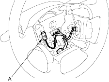
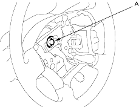
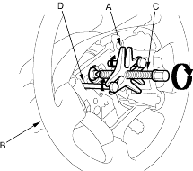
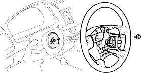

- Align the front wheels straight ahead, then remove the driver's airbag from the steering wheel (see page 23-165).
- Disconnect the horn switch connector (A).

- Loosen the steering wheel bolt (A) or nut (KX model).

- Install a commercially available steering wheel puller (A) on the steering wheel (B). Free the steering wheel from the steering column shaft by turning the pressure bolt (C) of the puller.
Note these items when removing the steering wheel:
- Do not tap on the steering wheel or the steering column shaft when removing the steering wheel.
- If you thread the puller bolts (D) into the wheel hub more than 5 threads, the bolts will hit the cable reel and damage it. To prevent this, install a pair of jam nuts 5 threads up on each puller bolt.

- Remove the steering wheel puller, then remove the steering wheel bolt or nut (KX model) and steering wheel from the steering column.
